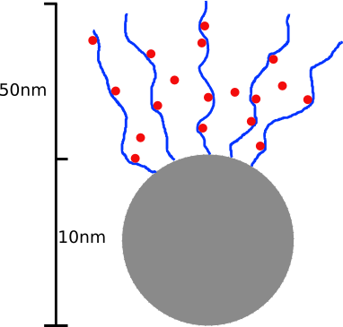
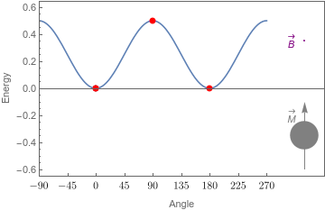

For my honours project (fourth-year undergraduate project) we investigated a candidate device for treatments using targeted drug release. The trigger mechanism for these devices is the application of a radio-frequency (RF) magnetic field. In theory, the interaction between the device and the applied field results in the production of heat, and a state change in a temperature sensitive polymer built into the device. We were particularly interested in experiments showing that these devices could be triggered by the application of an RF field, but without measuring a significant temperature rise in the solution containing the devices. We attempted to answer two questions through the course of this project: are these observations consistent with the supposed mechanism of drug release? And if not, how to we rationalise the observations?
These devices consist of a single-domain magnetic nanoparticle coated in a thermoresponsive hydrogel which is loaded with some drug (see fig. 1). When subjected to an alternating external field, these nanoparticles produce heat and, in theory, raise the temperature of the surrounding hydrogel (see fig. 2). At some critical temperature, the hydrogel changes from hydrophilic to hydrophobic. This change results in: the expulsion of the water and drug particles stored in the hydrogel, and in the subsequent contraction of the gel.
Our investigation produced three key conclusions: classical heat transfer models may break down on the scale of these devices, the transient nature of heat release is important (i.e. you cannot simply assume a steady power output for each nanoparticle), and other transport mechanisms may be important (including thermophoresis, resulting from the large temperature gradients around the devices).

A hydrogel (blue) coated nanoparticle (grey). Below a critical temperature the hydrogel is hydrophilic, and loaded with water and some drug (red). If heated above a critical temperature, the hydrogel becomes hydrophobic, expelling stored water and its drug load.

The energy of magnetization orientations for different applied fields (purple arrow). Allignment with the field is energetically favourable. If the magnetization of a nanoparticle flips from unaligned to aligned, energy is released corresponding to the energy difference between these two states.
For more information contact me.